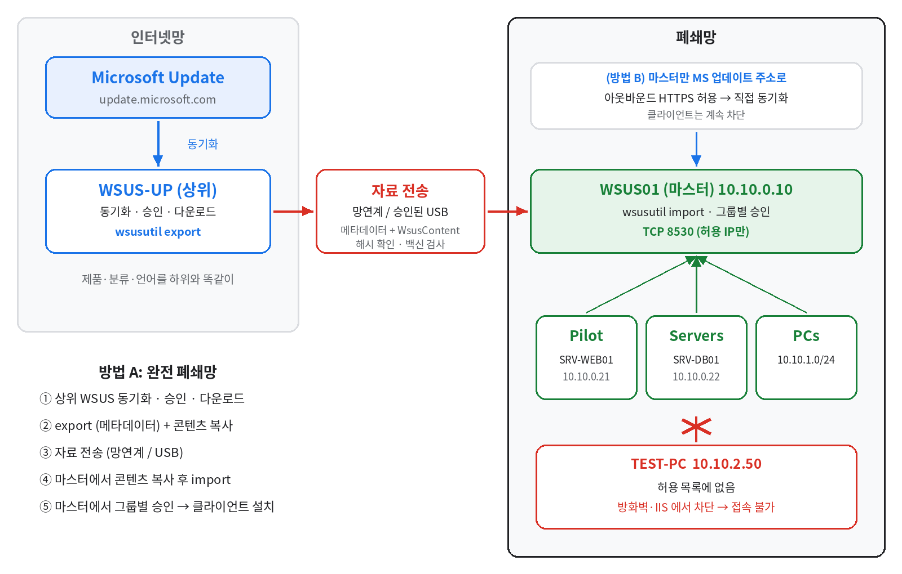
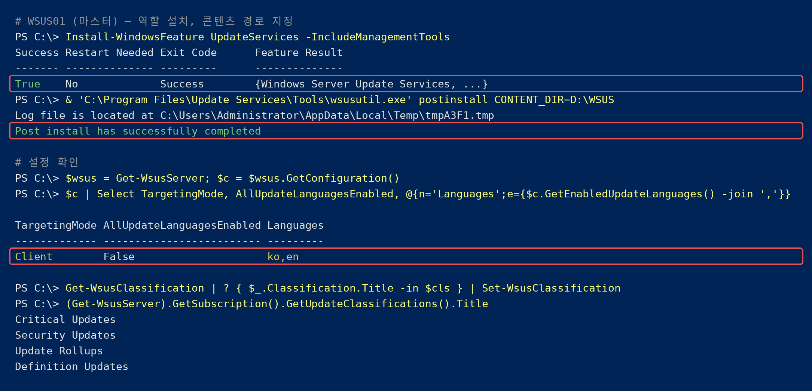
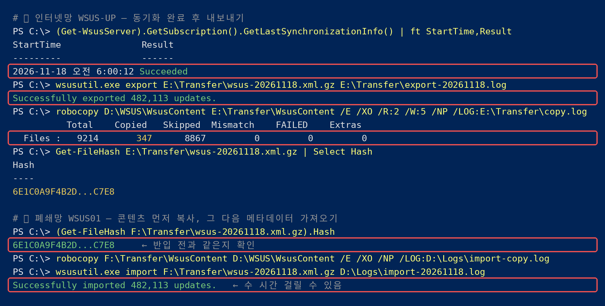
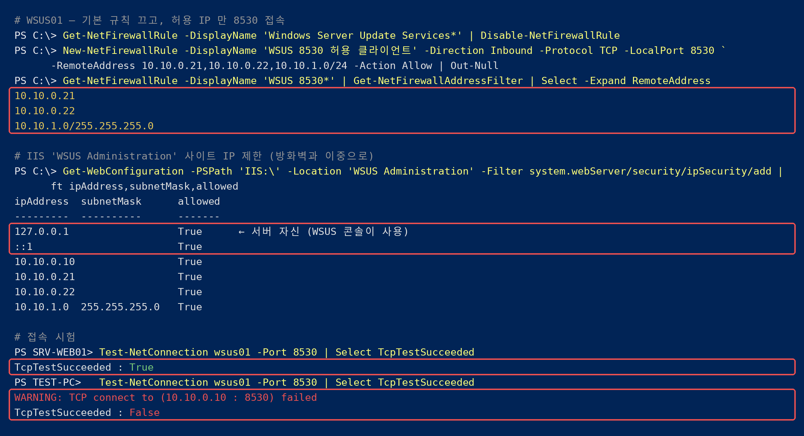
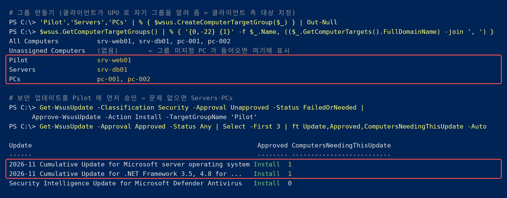
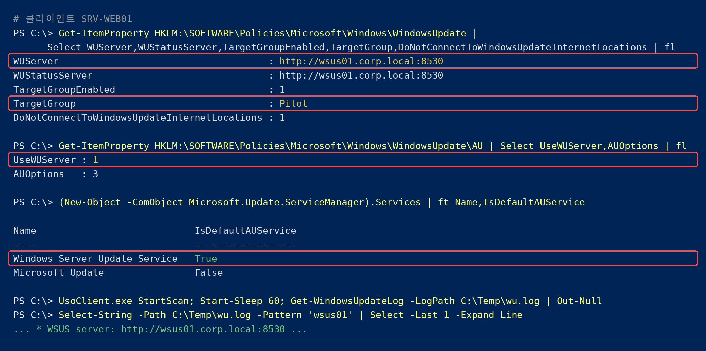

프로젝트 · 보안 점검·하드닝
폐쇄망 Windows 패치 서버 구축 (WSUS)
인터넷이 차단된 폐쇄망의 Windows 서버·PC에 보안 패치를 배포하기 위해 WSUS(Windows Server Update Services)를 구축했습니다. 폐쇄망 마스터가 최신 패치를 어떻게 받아 오는지(인터넷망 상위 서버에서 반입), 허용한 클라이언트만 접속하게 막는 방법, 클라이언트 설정까지 정리했습니다.
서버명·IP·도메인(corp.local)은 예시이며 화면도 예시입니다. WSUS는 Microsoft가 2024년에 기능 추가 중단(deprecated)을 발표했지만, 기존 기능은 Windows Server에 계속 포함되어 지원됩니다.
1. 구성

| 서버 | 위치 | 역할 |
|---|---|---|
WSUS-UP | 인터넷망 | Microsoft Update와 동기화, 업데이트 파일 다운로드, export |
WSUS01 10.10.0.10 | 폐쇄망 | 마스터. import, 그룹별 승인, 클라이언트 배포 (HTTP 8530) |
| 클라이언트 | 폐쇄망 | Pilot(SRV-WEB01), Servers(SRV-DB01), PCs(10.10.1.0/24) |
| 방법 A: 완전 폐쇄망 (반입) | 방법 B: 마스터만 외부 허용 | |
|---|---|---|
| 최신 패치 받기 | 인터넷망 WSUS에서 export → 망연계·USB로 반입 → import | 마스터가 Microsoft Update 주소로만 HTTPS·HTTP 나가서 직접 동기화 |
| 필요 조건 | 인터넷망에 WSUS 한 대 더, 자료 반입 절차 | 방화벽·프록시에서 도메인 기반 허용 정책 |
| 반영 속도 | 반입 주기에 따름 (보통 월 1회 + 긴급 시) | 매일 자동 |
| 적합한 곳 | 망분리 규정상 외부 통신이 전혀 안 되는 곳 | 예외 승인으로 패치 서버만 외부 통신이 가능한 곳 |
2. 마스터(WSUS01) 설치와 기본 설정
Windows Server 2022 기준, 데이터베이스는 내장 WID를 사용하고 업데이트 파일은 별도 디스크(D:)에 둡니다. 인터넷망의 WSUS-UP도 같은 방법으로 설치하고 언어·제품·분류를 똑같이 맞춥니다.
# 1) 역할 설치 + 콘텐츠 경로 지정
Install-WindowsFeature UpdateServices -IncludeManagementTools
New-Item D:\WSUS -ItemType Directory -Force | Out-Null
& 'C:\Program Files\Update Services\Tools\wsusutil.exe' postinstall CONTENT_DIR=D:\WSUS
# 2) 언어, 클라이언트 측 그룹 지정
$wsus = Get-WsusServer
$c = $wsus.GetConfiguration()
$langs = New-Object System.Collections.Specialized.StringCollection
$langs.AddRange([string[]]@('ko','en'))
$c.AllUpdateLanguagesEnabled = $false
$c.SetEnabledUpdateLanguages($langs)
$c.TargetingMode = 'Client' # 클라이언트가 GPO 로 자기 그룹을 알려 줌
$c.Save()제품·분류 선택 (인터넷망 WSUS-UP, 방법 B의 WSUS01)
# 동기화 원본: Microsoft Update
Set-WsusServerSynchronization -SyncFromMU
# 제품 목록만 먼저 받아 오기 (처음엔 목록이 비어 있음)
$sub = $wsus.GetSubscription()
$sub.StartSynchronizationForCategoryOnly()
while ($sub.GetSynchronizationStatus() -ne 'NotProcessing') { Start-Sleep 15 }
# 제품: 전부 끄고 필요한 것만 (WSUS 에서 Server 2022 이름은 'Microsoft Server operating system-21H2')
Get-WsusProduct | Set-WsusProduct -Disable
$prod = 'Microsoft Server operating system-21H2','Windows Server 2019',
'Windows 10, version 1903 and later','Windows 11'
Get-WsusProduct | Where-Object { $_.Product.Title -in $prod } | Set-WsusProduct
# 분류
$cls = 'Critical Updates','Security Updates','Update Rollups','Definition Updates'
Get-WsusClassification | Where-Object { $_.Classification.Title -in $cls } | Set-WsusClassification
# 매일 06:00(KST) 자동 동기화 — 이 시간 값은 UTC 기준이라 21:00 으로 넣음
$sub.SynchronizeAutomatically = $true
$sub.SynchronizeAutomaticallyTimeOfDay = New-TimeSpan -Hours 21
$sub.NumberOfSynchronizationsPerDay = 1
$sub.Save()
$sub.StartSynchronization()
Get-WsusProduct | Select -Expand Product | Select Title로 목록을 먼저 확인하고 넣습니다. 제품·언어를 많이 고를수록 저장 공간과 반입 용량이 크게 늘어납니다.3. 마스터가 최신 패치를 가져오는 방법
방법 A: 인터넷망 WSUS에서 export → 반입 → import
WSUS에 들어 있는 wsusutil export/import로 업데이트 메타데이터(목록·정보)를 파일 하나로 옮기고, 업데이트 파일(WsusContent 폴더)은 따로 복사합니다. 승인 정보는 옮겨지지 않으므로 승인은 폐쇄망 마스터에서 따로 합니다.
- WSUS-UP 동기화: 매일 자동 동기화 결과가
Succeeded인지 확인 - WSUS-UP 승인: 반입할 업데이트를 승인 (승인해야 파일이 다운로드됨. "승인된 업데이트만 다운로드" 설정 기준)
- 다운로드 완료 확인: WSUS 콘솔 개요의 "다운로드 필요 파일" 0 확인
- export + 파일 복사 → 해시값 기록
- 반입: 망연계 자료 전송 또는 승인된 USB, 반입 전 백신 검사
- WSUS01: 해시 확인 → 파일 먼저 복사 → 메타데이터 import
- WSUS01 승인: Pilot → Servers → PCs 순서 (5번)
# ── 인터넷망 WSUS-UP ─────────────────────────────────
$ws = 'C:\Program Files\Update Services\Tools\wsusutil.exe'
$d = Get-Date -Format yyyyMMdd
# 메타데이터 내보내기 (수십 분 걸릴 수 있음)
& $ws export "E:\Transfer\wsus-$d.xml.gz" "E:\Transfer\export-$d.log"
# 업데이트 파일: 지난 반입 이후(약 40일 이내) 바뀐 것만
robocopy D:\WSUS\WsusContent E:\Transfer\WsusContent /E /MAXAGE:40 /R:2 /W:5 /NP /LOG:E:\Transfer\copy-$d.log
# 반입 확인용 해시
Get-FileHash "E:\Transfer\wsus-$d.xml.gz" | Select Hash | Out-File "E:\Transfer\hash-$d.txt"
# ── 폐쇄망 WSUS01 ───────────────────────────────────
(Get-FileHash "F:\Transfer\wsus-$d.xml.gz").Hash # hash 파일과 같은지 비교
robocopy F:\Transfer\WsusContent D:\WSUS\WsusContent /E /XO /NP /LOG:D:\Logs\import-copy-$d.log
& $ws import "F:\Transfer\wsus-$d.xml.gz" "D:\Logs\import-$d.log" # 파일 복사 후에 import
- 두 서버의 언어·제품·분류·"빠른 설치 파일" 설정이 다르면 import 후 파일이 없다고 나오거나 다운로드 실패 상태로 남습니다.
- 폐쇄망 마스터는 Microsoft Update와 동기화할 수 없으므로 자동 동기화를 끕니다.
- import는 메타데이터 양에 따라 수 시간 걸립니다. 작업 시간에 여유를 둡니다.
- 파일이 누락된 것 같으면
wsusutil reset으로 콘텐츠를 다시 검사합니다.
방법 B: 마스터만 Microsoft Update 주소 허용
망 정책상 예외가 가능하면 WSUS01에서만 아래 주소로 나가는 통신(TCP 80·443)을 열고, 2번의 동기화 설정을 그대로 씁니다. 클라이언트는 계속 외부 차단입니다. 도메인 단위 허용이 필요하므로 FQDN을 지원하는 방화벽이나 프록시를 거칩니다.
windowsupdate.microsoft.com *.windowsupdate.microsoft.com
*.update.microsoft.com *.windowsupdate.com
download.windowsupdate.com *.download.windowsupdate.com
download.microsoft.com wustat.windows.com
ntservicepack.microsoft.com go.microsoft.com
dl.delivery.mp.microsoft.com *.delivery.mp.microsoft.com
# 프록시를 거칠 때 (WSUS 설정)
$c = (Get-WsusServer).GetConfiguration()
$c.UseProxy = $true; $c.ProxyName = 'proxy.corp.local'; $c.ProxyServerPort = 8080
$c.Save()4. 특정 클라이언트만 허용 (마스터)
WSUS는 기본적으로 클라이언트 인증이 없어서 8530 포트에 닿기만 하면 어떤 PC든 등록하고 업데이트를 받을 수 있습니다. 등록된 장비만 쓰게 하려고 방화벽과 IIS IP 제한 두 겹으로 막았습니다.
① Windows 방화벽: 허용 IP만 8530
# WSUS 설치 때 생긴 전체 허용 규칙 끄기
Get-NetFirewallRule -DisplayName 'Windows Server Update Services*' | Disable-NetFirewallRule
# 허용할 서버·대역만
New-NetFirewallRule -DisplayName 'WSUS 8530 허용 클라이언트' -Direction Inbound -Protocol TCP -LocalPort 8530 `
-RemoteAddress 10.10.0.21,10.10.0.22,10.10.1.0/24 -Action Allow
# 장비 추가 시
Set-NetFirewallRule -DisplayName 'WSUS 8530 허용 클라이언트' `
-RemoteAddress 10.10.0.21,10.10.0.22,10.10.0.23,10.10.1.0/24② IIS: WSUS 사이트에 IP 허용 목록
Install-WindowsFeature Web-IP-Security
Import-Module WebAdministration
$loc = 'WSUS Administration'
$f = 'system.webServer/security/ipSecurity'
# 목록에 없는 IP 는 거부 (403)
Set-WebConfigurationProperty -PSPath 'IIS:\' -Location $loc -Filter $f -Name allowUnlisted -Value $false
# 서버 자신은 반드시 허용 — WSUS 콘솔·PowerShell 도 이 사이트로 접속함
foreach ($ip in '127.0.0.1','::1','10.10.0.10','10.10.0.21','10.10.0.22') {
Add-WebConfigurationProperty -PSPath 'IIS:\' -Location $loc -Filter $f -Name '.' `
-Value @{ ipAddress = $ip; allowed = 'true' }
}
Add-WebConfigurationProperty -PSPath 'IIS:\' -Location $loc -Filter $f -Name '.' `
-Value @{ ipAddress = '10.10.1.0'; subnetMask = '255.255.255.0'; allowed = 'true' }
③ 그룹에 없는 장비 확인
클라이언트 측 그룹 지정을 쓰면, GPO에 없는 그룹 이름을 보내거나 설정이 빠진 장비는 Unassigned Computers에 들어갑니다. 이 그룹에는 아무것도 승인하지 않고, 정기적으로 확인해 모르는 장비는 삭제합니다.
$g = $wsus.GetComputerTargetGroups() | Where-Object Name -eq 'Unassigned Computers'
$g.GetComputerTargets() | Select FullDomainName, IPAddress, LastReportedStatusTime
# 모르는 장비 삭제
$g.GetComputerTargets() | Where-Object FullDomainName -eq 'unknown-pc' | ForEach-Object { $_.Delete() }5. 그룹 만들고 승인 (Pilot → Servers → PCs)
'Pilot','Servers','PCs' | ForEach-Object { $wsus.CreateComputerTargetGroup($_) } | Out-Null
# ① 보안 업데이트를 Pilot 에 먼저
Get-WsusUpdate -Classification Security -Approval Unapproved -Status FailedOrNeeded |
Approve-WsusUpdate -Action Install -TargetGroupName 'Pilot'
# ② 며칠 확인 후 문제 없으면 Servers, PCs
Get-WsusUpdate -Classification Security -Approval Approved -Status FailedOrNeeded |
Approve-WsusUpdate -Action Install -TargetGroupName 'Servers'
# 정리: 대체된·만료된 업데이트 거부, 필요 없는 파일 삭제 (월 1회)
Invoke-WsusServerCleanup -DeclineSupersededUpdates -DeclineExpiredUpdates `
-CleanupObsoleteUpdates -CleanupUnneededContentFiles
6. 클라이언트 설정
도메인 환경: GPO
컴퓨터 구성 → 정책 → 관리 템플릿 → Windows 구성 요소 → Windows 업데이트
├ 인트라넷 Microsoft 업데이트 서비스 위치 지정 : 사용
│ 업데이트 검색 서비스 http://wsus01.corp.local:8530
│ 통계 서버 http://wsus01.corp.local:8530
├ 클라이언트 쪽 대상 지정 사용 : 사용 → 대상 그룹 이름 Pilot (OU 별로 Servers, PCs)
├ 자동 업데이트 구성 : 사용 → 3 (자동 다운로드, 설치는 알림) ※ PC 는 4 (예약 설치)
├ Windows 업데이트 인터넷 위치에 연결 안 함 : 사용
└ 예약된 자동 업데이트 설치 시 로그온한 사용자가 있으면 자동 다시 시작 안 함 : 사용Windows 10·11 최신 관리 템플릿에서는 일부 항목이 "WSUS에서 제공하는 업데이트 관리" 하위로 옮겨져 있습니다. 이름은 같으니 검색해서 찾습니다.
워크그룹(도메인 없음): 레지스트리
# 관리자 PowerShell — 서버마다 TargetGroup 만 바꿔서 실행
$wu = 'HKLM:\SOFTWARE\Policies\Microsoft\Windows\WindowsUpdate'
$au = "$wu\AU"
New-Item $au -Force | Out-Null
New-ItemProperty $wu -Name WUServer -Value 'http://wsus01.corp.local:8530' -PropertyType String -Force | Out-Null
New-ItemProperty $wu -Name WUStatusServer -Value 'http://wsus01.corp.local:8530' -PropertyType String -Force | Out-Null
New-ItemProperty $wu -Name TargetGroupEnabled -Value 1 -PropertyType DWord -Force | Out-Null
New-ItemProperty $wu -Name TargetGroup -Value 'Pilot' -PropertyType String -Force | Out-Null
New-ItemProperty $wu -Name DoNotConnectToWindowsUpdateInternetLocations -Value 1 -PropertyType DWord -Force | Out-Null
New-ItemProperty $au -Name UseWUServer -Value 1 -PropertyType DWord -Force | Out-Null
New-ItemProperty $au -Name AUOptions -Value 3 -PropertyType DWord -Force | Out-Null
New-ItemProperty $au -Name NoAutoRebootWithLoggedOnUsers -Value 1 -PropertyType DWord -Force | Out-Null
Restart-Service wuauserv
UsoClient.exe StartScan # 즉시 검색 (Windows 10 / Server 2016 이후)| 값 | 의미 |
|---|---|
WUServer / WUStatusServer | 업데이트를 받을 서버 / 설치 결과를 보고할 서버. 폐쇄망 DNS가 없으면 IP로 쓰거나 hosts에 등록 |
TargetGroup | WSUS에 만든 그룹 이름과 정확히 같아야 함 (다르면 Unassigned Computers) |
UseWUServer = 1 | 위 서버를 실제로 사용 (이 값이 없으면 WUServer를 무시) |
AUOptions | 2 다운로드 전 알림 · 3 자동 다운로드·설치 알림 · 4 자동 다운로드·예약 설치 |
DoNotConnectToWindowsUpdateInternetLocations | Microsoft Update로 직접 나가려는 시도 차단 (폐쇄망에서 불필요한 지연 방지) |

7. 트러블슈팅
| 증상 | 원인 및 해결 |
|---|---|
| 클라이언트가 WSUS 콘솔에 안 보임 | 8530 방화벽·IIS 허용 목록 누락, UseWUServer 누락, 서버 이름 해석 실패. Test-NetConnection wsus01 -Port 8530로 확인 후 UsoClient StartScan |
| Unassigned Computers에 들어감 | TargetGroup 이름 오타, 또는 WSUS가 서버 측 지정 모드. TargetingMode가 Client인지 확인 |
| 복제한 VM끼리 한 대처럼 보임 | Windows Update 클라이언트 ID(SusClientId) 중복 → HKLM\SOFTWARE\Microsoft\Windows\CurrentVersion\WindowsUpdate의 SusClientId, SusClientIDValidation 삭제 후 서비스 재시작 |
| import 후 "파일 다운로드 필요"로 남음 | WsusContent 복사 누락, 또는 두 서버의 언어·제품·빠른 설치 파일 설정 불일치 → 파일 다시 복사 후 wsusutil reset |
| WSUS 콘솔이 안 열림 | IIS IP 제한에 127.0.0.1·서버 IP 누락. 또는 WsusPool 메모리 부족으로 중지 → IIS 관리자에서 WsusPool 개인 메모리 제한 상향 후 재시작 |
| 동기화 시간이 9시간 어긋남 | 자동 동기화 시간은 UTC 기준 → KST에서 9시간 빼서 입력 |
| 디스크가 계속 참 | 월 1회 Invoke-WsusServerCleanup, 필요 없는 제품·언어 해제 |